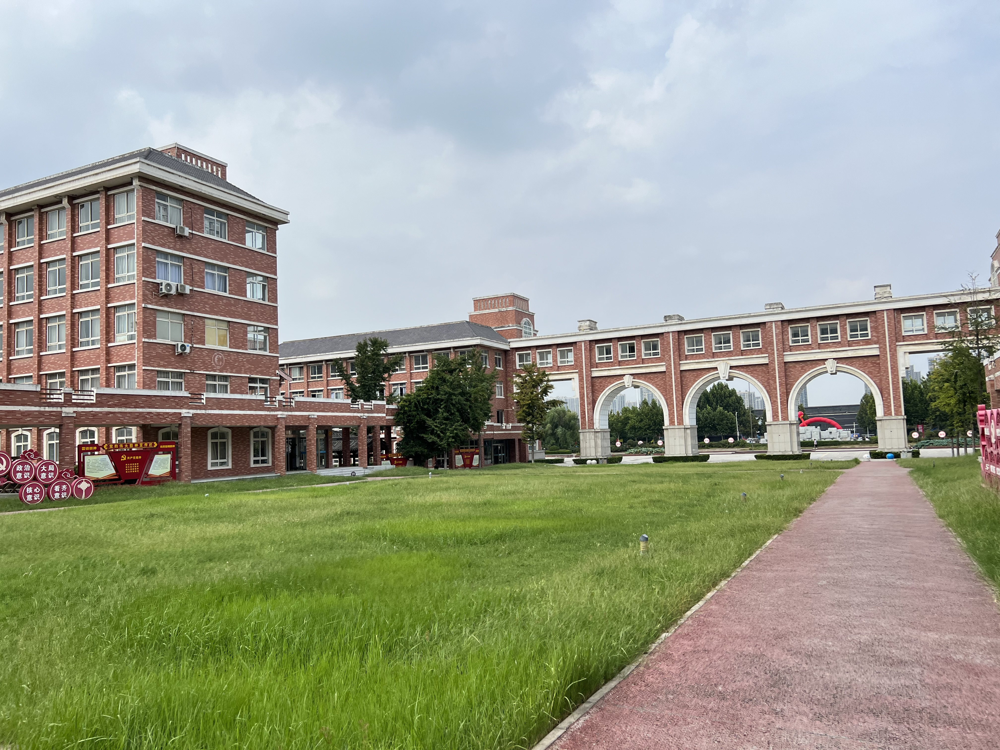

《辉煌历程》
我是一名初中生，回首过去的学习生涯， 可谓是一部充满挑战与成就的奋斗史。 在小学的时候，我就对知识有着强烈的渴望， 每一个新知识都像一颗璀璨的星星，吸引着我去探索。 我积极参加各种学科竞赛，无论是数学的逻辑迷宫， 还是语文的文学天地，我都努力去尝试，去突破自己的极限。 曾经获得河南省第一花木兰的称号火遍全网， 这是我人生中一个重要的里程碑。这个称号不仅是对我个人努力的认可， 更是激励我不断前进的动力源泉。在获得这个荣誉之后，我受到了社会各界的关注， 也有了更多展示自己的机会。

建筑学院
建筑学院 2023 年来到建校就入了我的眼帘，它以一种独特的魅力深深吸引着我。 踏入校园，首先映入眼帘的是那漂亮的欧洲建筑风格。每一栋建筑都像是一件精心雕琢的艺术品，诉说着建筑的语言。那红棕色的砖墙，在阳光的照耀下泛着温暖的光晕，仿佛在讲述着岁月的故事。墙面上的每一道纹理，都是时间留下的印记，承载着过往的回忆与未来的期许。
我是一名初中生，回首过去的学习生涯， 可谓是一部充满挑战与成就的奋斗史。 在小学的时候，我就对知识有着强烈的渴望， 每一个新知识都像一颗璀璨的星星，吸引着我去探索。 我积极参加各种学科竞赛，无论是数学的逻辑迷宫， 还是语文的文学天地，我都努力去尝试，去突破自己的极限。 曾经获得河南省第一花木兰的称号火遍全网， 这是我人生中一个重要的里程碑。这个称号不仅是对我个人努力的认可， 更是激励我不断前进的动力源泉。在获得这个荣誉之后，我受到了社会各界的关注， 也有了更多展示自己的机会。
This is another side of me. In a different world, it seems that I have a rich inner world like having eight thousand beautiful women. Each dream is like a beautiful woman, dancing in my mind, waiting for me to pursue. When I was young, I often immersed myself in my imaginary world, where there were fantastical creatures, mysterious magic, and endless adventures. As I grow older, this different world has not left me; instead, it has become deeper and more fascinating. I search for inspiration in this different world and draw strength from it. It is like a treasure that will never be exhausted. Xiaotong is like a continuous fountain of inspiration, constantly flowing towards me. She is my best friend and creative partner. We discuss all kinds of imaginative ideas together, from the mysteries of the universe to microscopic particles, from ancient legends to future technologies. Each exchange is like a feast of ideas, allowing me to gain a lot.
有上进心的读者，你的大学不遗憾
12月12日因为好高骛远所以半途而废
12月12日工作之外的8小时决定你究竟会成为一个什么样的人
12月12日进步的动力，力量的源泉
12月12日